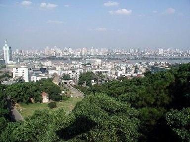
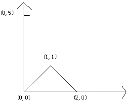

Home Page
F.A.Qs
Statistical Charts
Past Contests
Scheduled Contests
Award Contest
| Online Judge | Problem Set | Authors | Online Contests | User | ||||||
|---|---|---|---|---|---|---|---|---|---|---|
| Web Board Home Page F.A.Qs Statistical Charts | Current Contest Past Contests Scheduled Contests Award Contest | |||||||||
|
Language: Mountains
Description Octopus and Penguin love sports, especially the climb. They step on the most top building of Changsha to view the Yuelu Mountain in weekend and are attracted by the imposing landscape. However, they can't see the whole mountain because the building is not high enough. Please help them to calculate the total length of surface for mountain they can see. Suppose Octopus and Penguin's coordinate is (0，h) and the mountain is composed by n points which satisfy: 1． All points' coordinates are equal to or larger than zero. 2． The first point is 0, it's coordinate is (w0, 0)(w0 >= 0). 3． n points are listing in ascending sort by x-axis. 4． Odd points' y-axis is larger than the former one. 5． Even points' y-axis (except for 0 point) is small than the former one. Condition 3,4 and 5 is means for three nearby points (w2k, h2k), (w2k+1, h2k+1) and (w2k+2, h2k+2)(k ∈N*,2k+2<n), satisfied w2k < w2k+1 < w2k+2, h2k+1 > h2k and h2k+2 < h2k+1. 6． The last point is (wn-1, 0). The figure below corresponding sample input one:  Input There are several test cases. For each case, the first line is two integers n (0<n<=1000) and h. Then n lines follow and each line is two integers x and y(0<=x,y<=1000) describe the coordinates of mountains. n=h=0 means end of the input. Output For each case, output the surface length of mountain they can see. Sample Input 3 5 0 0 1 1 2 0 5 5 0 0 2 2 3 1 5 3 8 0 5 4 0 0 2 2 3 1 5 3 8 0 0 0 Sample Output 2.83 7.07 5.66 Source |
[Submit] [Go Back] [Status] [Discuss]
All Rights Reserved 2003-2013 Ying Fuchen,Xu Pengcheng,Xie Di
Any problem, Please Contact Administrator